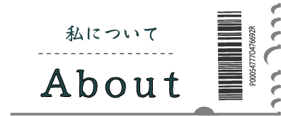
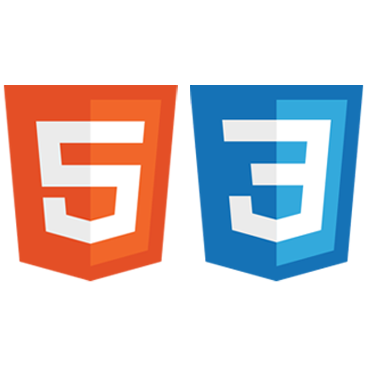
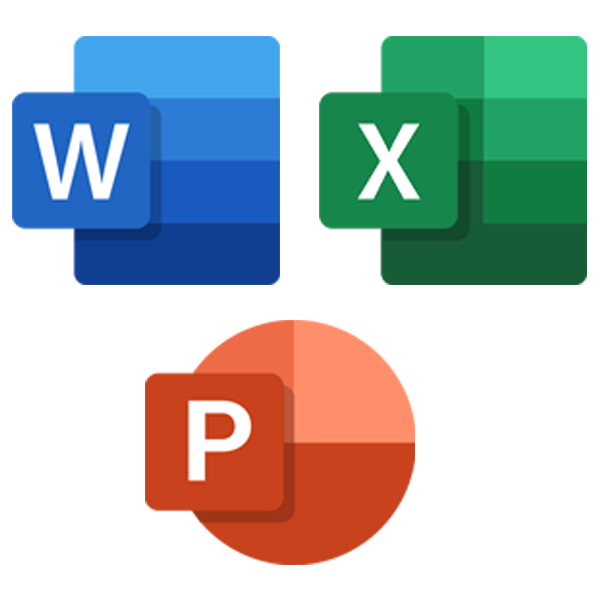
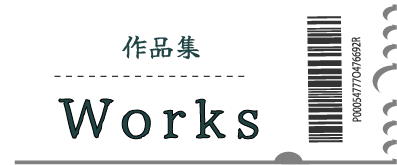
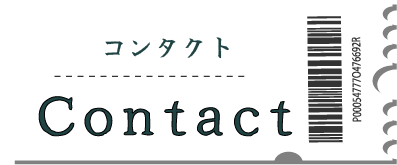

田中 侑里香（たなか ゆりか）
山口県出身 1988年生まれ。
大学生の頃から観光で地域を元気にしたい！という思いがあり、ホテル勤務後旅行会社に転職し店頭カウンターで約９年間勤務。仕事を通してWebページが観光地集客にどれだけ重要なものなのかを痛感。
これからは自ら情報発信の側に携わりたいと思い、職業訓練校パソコンスクールHA＊NA Webデザイン養成科にてWebデザインを学び9月卒業。
Strength
旅行会社では、お客様のご要望をお伺いしあらゆる情報と知識を駆使してお客様のお声を形にして来ました。
お客様のご要望を深く読み取るヒアリング力は私の強みです。
また、長年接客業に携わってきたのでとにかく色々な人と関わることが楽しみです。
これらの強みと現在勉強していることを活かして、私にしかできないデザインでの情報発信を目指しています。
Skills
Illustrator

イラスト・ロゴデザイン・バナー・名刺作成で使用しています。
Photoshop

画像加工・バナー作成・デザインカンプで使用しています。
HTML5/CSS3
WEBサイトを一から構築するためのHTML・CSSコーディングを基礎から学びました。
レスポンシブデザインも可能です。
JavaScript

基礎から学び基本的なコード（jQuery）を学習しました。
Word Press

PHPを使用し、ブログ投稿・ページ作成の基本的な技術を学びました。
Microsoft Ofiice
Word/Excell/Powerpointを基礎からより実践的な内容まで幅広く学びました。


ご連絡・お問合せの際は、
下記アドレスまでお願いいたします。